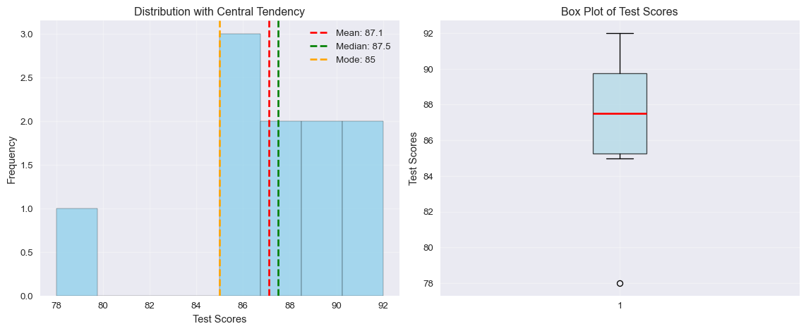
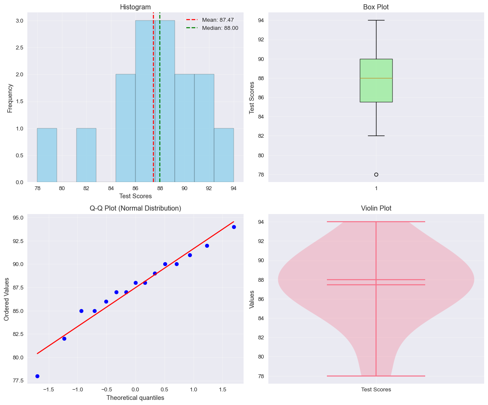
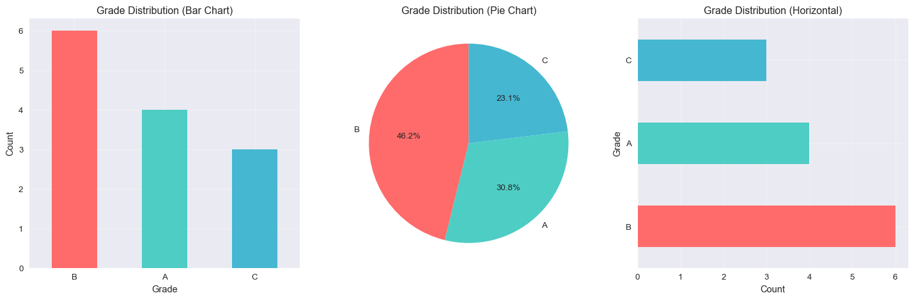
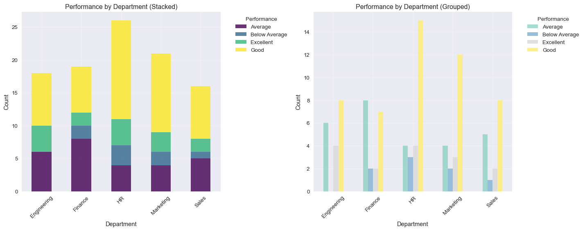

import numpy as np
import pandas as pd
from scipy import stats
import matplotlib.pyplot as plt
import seaborn as sns
# Set styling for better plots
plt.style.use('seaborn-v0_8')
sns.set_palette("husl")Python Implementation of Descriptive Statistics
Essential Libraries and Statistical Measures
Essential Libraries
| Library | Purpose | Key Functions |
|---|---|---|
| NumPy | Numerical computing | np.mean(), np.median(), np.std() |
| Pandas | Data manipulation | df.describe(), df.mean(), df.median() |
| SciPy | Scientific computing | stats.mode(), stats.describe() |
| Matplotlib | Basic plotting | plt.plot(), plt.hist(), plt.boxplot() |
| Seaborn | Statistical visualization | sns.histplot(), sns.boxplot() |
Central Tendency Measures
# Sample data
data = [85, 90, 78, 92, 88, 91, 85, 87, 89, 86]
# Using NumPy
mean_np = np.mean(data)
print(f"Mean (NumPy): {mean_np:.2f}")
# Using Pandas
df = pd.DataFrame({'scores': data})
mean_pd = df['scores'].mean()
print(f"Mean (Pandas): {mean_pd:.2f}")
# Manual calculation for understanding
manual_mean = sum(data) / len(data)
print(f"Mean (Manual): {manual_mean:.2f}")Mean (NumPy): 87.10
Mean (Pandas): 87.10
Mean (Manual): 87.10# Using NumPy
median_np = np.median(data)
print(f"Median (NumPy): {median_np:.2f}")
# Using Pandas
median_pd = df['scores'].median()
print(f"Median (Pandas): {median_pd:.2f}")
# Manual calculation
sorted_data = sorted(data)
n = len(sorted_data)
if n % 2 == 0:
manual_median = (sorted_data[n//2 - 1] + sorted_data[n//2]) / 2
else:
manual_median = sorted_data[n//2]
print(f"Median (Manual): {manual_median:.2f}")Median (NumPy): 87.50
Median (Pandas): 87.50
Median (Manual): 87.50# Using SciPy
mode_result = stats.mode(data, keepdims=True)
print(f"Mode (SciPy): {mode_result.mode[0]}, Count: {mode_result.count[0]}")
# Using Pandas
mode_pd = df['scores'].mode()
print(f"Mode (Pandas): {mode_pd.values}")
# Manual calculation using Counter
from collections import Counter
counter = Counter(data)
max_count = max(counter.values())
modes = [k for k, v in counter.items() if v == max_count]
print(f"Mode (Manual): {modes}, Count: {max_count}")Mode (SciPy): 85, Count: 2
Mode (Pandas): [85]
Mode (Manual): [85], Count: 2fig, (ax1, ax2) = plt.subplots(1, 2, figsize=(12, 5))
# Histogram with central tendency lines
ax1.hist(data, bins=8, alpha=0.7, color='skyblue', edgecolor='black')
ax1.axvline(mean_np, color='red', linestyle='--', linewidth=2, label=f'Mean: {mean_np:.1f}')
ax1.axvline(median_np, color='green', linestyle='--', linewidth=2, label=f'Median: {median_np:.1f}')
ax1.axvline(mode_result.mode[0], color='orange', linestyle='--', linewidth=2, label=f'Mode: {mode_result.mode[0]}')
ax1.set_xlabel('Test Scores')
ax1.set_ylabel('Frequency')
ax1.set_title('Distribution with Central Tendency')
ax1.legend()
ax1.grid(True, alpha=0.3)
# Box plot
ax2.boxplot(data, patch_artist=True,
boxprops=dict(facecolor='lightblue', alpha=0.7),
medianprops=dict(color='red', linewidth=2))
ax2.set_ylabel('Test Scores')
ax2.set_title('Box Plot of Test Scores')
ax2.grid(True, alpha=0.3)
plt.tight_layout()
plt.show()
Comprehensive Analysis Function
def descriptive_summary(data, column_name="Data", create_plots=True):
"""
Calculate comprehensive descriptive statistics with optional visualizations
Parameters:
-----------
data : list or array-like
The data to analyze
column_name : str
Name for the data column
create_plots : bool
Whether to create visualizations
Returns:
--------
pandas.DataFrame
Descriptive statistics summary
"""
# Convert to DataFrame
df = pd.DataFrame({column_name: data})
# Basic statistics
print(f"📊 Descriptive Statistics for {column_name}")
print("=" * 50)
print(f"Count: {len(data)}")
print(f"Mean: {np.mean(data):.3f}")
print(f"Median: {np.median(data):.3f}")
print(f"Standard Deviation: {np.std(data, ddof=1):.3f}")
print(f"Variance: {np.var(data, ddof=1):.3f}")
print(f"Range: {np.max(data) - np.min(data):.3f}")
print(f"Min: {np.min(data):.3f}")
print(f"Max: {np.max(data):.3f}")
# Mode calculation
try:
mode_result = stats.mode(data, keepdims=True)
print(f"Mode: {mode_result.mode[0]} (appears {mode_result.count[0]} times)")
except:
print("Mode: No unique mode")
# Quartiles
q1, q2, q3 = np.percentile(data, [25, 50, 75])
print(f"Q1 (25th percentile): {q1:.3f}")
print(f"Q2 (50th percentile): {q2:.3f}")
print(f"Q3 (75th percentile): {q3:.3f}")
print(f"IQR: {q3 - q1:.3f}")
if create_plots:
# Create comprehensive visualization
fig, ((ax1, ax2), (ax3, ax4)) = plt.subplots(2, 2, figsize=(12, 10))
# Histogram
ax1.hist(data, bins=10, alpha=0.7, color='skyblue', edgecolor='black')
ax1.axvline(np.mean(data), color='red', linestyle='--', label=f'Mean: {np.mean(data):.2f}')
ax1.axvline(np.median(data), color='green', linestyle='--', label=f'Median: {np.median(data):.2f}')
ax1.set_xlabel(column_name)
ax1.set_ylabel('Frequency')
ax1.set_title('Histogram')
ax1.legend()
ax1.grid(True, alpha=0.3)
# Box plot
ax2.boxplot(data, patch_artist=True,
boxprops=dict(facecolor='lightgreen', alpha=0.7))
ax2.set_ylabel(column_name)
ax2.set_title('Box Plot')
ax2.grid(True, alpha=0.3)
# Q-Q plot
stats.probplot(data, dist="norm", plot=ax3)
ax3.set_title('Q-Q Plot (Normal Distribution)')
ax3.grid(True, alpha=0.3)
# Violin plot
parts = ax4.violinplot([data], positions=[1], showmeans=True, showmedians=True)
ax4.set_xticks([1])
ax4.set_xticklabels([column_name])
ax4.set_ylabel('Values')
ax4.set_title('Violin Plot')
ax4.grid(True, alpha=0.3)
plt.tight_layout()
plt.show()
return df.describe()# Example with test scores
test_scores = [85, 90, 78, 92, 88, 91, 85, 87, 89, 86, 94, 82, 88, 90, 87]
summary = descriptive_summary(test_scores, "Test Scores", create_plots=True)📊 Descriptive Statistics for Test Scores
==================================================
Count: 15
Mean: 87.467
Median: 88.000
Standard Deviation: 4.015
Variance: 16.124
Range: 16.000
Min: 78.000
Max: 94.000
Mode: 85 (appears 2 times)
Q1 (25th percentile): 85.500
Q2 (50th percentile): 88.000
Q3 (75th percentile): 90.000
IQR: 4.500
# Display the detailed summary
print("\n📋 Pandas Describe Output:")
print(summary)
# Additional statistics
print(f"\n🔍 Additional Insights:")
print(f"Coefficient of Variation: {(np.std(test_scores, ddof=1) / np.mean(test_scores)) * 100:.2f}%")
print(f"Skewness: {stats.skew(test_scores):.3f}")
print(f"Kurtosis: {stats.kurtosis(test_scores):.3f}")
📋 Pandas Describe Output:
Test Scores
count 15.000000
mean 87.466667
std 4.015446
min 78.000000
25% 85.500000
50% 88.000000
75% 90.000000
max 94.000000
🔍 Additional Insights:
Coefficient of Variation: 4.59%
Skewness: -0.677
Kurtosis: 0.383Categorical Data Analysis
# Categorical data example
categories = ['A', 'B', 'B', 'C', 'A', 'B', 'A', 'C', 'B', 'B', 'A', 'C', 'B']
cat_series = pd.Series(categories, name='Grades')
print("📊 Categorical Data Analysis:")
print(f"Mode: {cat_series.mode().values[0]}")
print(f"Total Count: {len(cat_series)}")
print("\n📈 Value Counts:")
value_counts = cat_series.value_counts()
print(value_counts)
print("\n📊 Proportions:")
proportions = cat_series.value_counts(normalize=True)
print(proportions.round(3))📊 Categorical Data Analysis:
Mode: B
Total Count: 13
📈 Value Counts:
Grades
B 6
A 4
C 3
Name: count, dtype: int64
📊 Proportions:
Grades
B 0.462
A 0.308
C 0.231
Name: proportion, dtype: float64fig, (ax1, ax2, ax3) = plt.subplots(1, 3, figsize=(15, 5))
# Bar chart
value_counts.plot(kind='bar', ax=ax1, color=['#FF6B6B', '#4ECDC4', '#45B7D1'])
ax1.set_title('Grade Distribution (Bar Chart)')
ax1.set_xlabel('Grade')
ax1.set_ylabel('Count')
ax1.tick_params(axis='x', rotation=0)
ax1.grid(True, alpha=0.3)
# Pie chart
ax2.pie(value_counts.values, labels=value_counts.index, autopct='%1.1f%%',
colors=['#FF6B6B', '#4ECDC4', '#45B7D1'], startangle=90)
ax2.set_title('Grade Distribution (Pie Chart)')
# Horizontal bar chart
value_counts.plot(kind='barh', ax=ax3, color=['#FF6B6B', '#4ECDC4', '#45B7D1'])
ax3.set_title('Grade Distribution (Horizontal)')
ax3.set_xlabel('Count')
ax3.set_ylabel('Grade')
ax3.grid(True, alpha=0.3)
plt.tight_layout()
plt.show()
# Create a more complex categorical dataset
np.random.seed(42)
departments = ['Engineering', 'Marketing', 'Sales', 'HR', 'Finance']
performance = ['Excellent', 'Good', 'Average', 'Below Average']
# Generate sample data
data_complex = pd.DataFrame({
'Department': np.random.choice(departments, 100),
'Performance': np.random.choice(performance, 100, p=[0.2, 0.4, 0.3, 0.1]),
'Salary': np.random.normal(60000, 15000, 100)
})
print("🏢 Advanced Categorical Analysis:")
print("\nCross-tabulation of Department vs Performance:")
crosstab = pd.crosstab(data_complex['Department'], data_complex['Performance'])
print(crosstab)
print("\nProportions within each department:")
proportions = pd.crosstab(data_complex['Department'], data_complex['Performance'], normalize='index')
print(proportions.round(3))🏢 Advanced Categorical Analysis:
Cross-tabulation of Department vs Performance:
Performance Average Below Average Excellent Good
Department
Engineering 6 0 4 8
Finance 8 2 2 7
HR 4 3 4 15
Marketing 4 2 3 12
Sales 5 1 2 8
Proportions within each department:
Performance Average Below Average Excellent Good
Department
Engineering 0.333 0.000 0.222 0.444
Finance 0.421 0.105 0.105 0.368
HR 0.154 0.115 0.154 0.577
Marketing 0.190 0.095 0.143 0.571
Sales 0.312 0.062 0.125 0.500fig, (ax1, ax2) = plt.subplots(1, 2, figsize=(15, 6))
# Stacked bar chart
crosstab.plot(kind='bar', stacked=True, ax=ax1,
colormap='viridis', alpha=0.8)
ax1.set_title('Performance by Department (Stacked)')
ax1.set_xlabel('Department')
ax1.set_ylabel('Count')
ax1.tick_params(axis='x', rotation=45)
ax1.legend(title='Performance', bbox_to_anchor=(1.05, 1), loc='upper left')
ax1.grid(True, alpha=0.3)
# Grouped bar chart
crosstab.plot(kind='bar', ax=ax2,
colormap='Set3', alpha=0.8)
ax2.set_title('Performance by Department (Grouped)')
ax2.set_xlabel('Department')
ax2.set_ylabel('Count')
ax2.tick_params(axis='x', rotation=45)
ax2.legend(title='Performance', bbox_to_anchor=(1.05, 1), loc='upper left')
ax2.grid(True, alpha=0.3)
plt.tight_layout()
plt.show()
Interactive Summary Dashboard
# Create a comprehensive summary of all our analyses
def create_summary_dashboard():
print("🎯 PYTHON STATISTICS IMPLEMENTATION SUMMARY")
print("=" * 60)
# Test scores summary
test_scores = [85, 90, 78, 92, 88, 91, 85, 87, 89, 86, 94, 82, 88, 90, 87]
print(f"📊 NUMERICAL DATA ANALYSIS")
print(f"Sample Size: {len(test_scores)}")
print(f"Mean: {np.mean(test_scores):.2f}")
print(f"Median: {np.median(test_scores):.2f}")
print(f"Mode: {stats.mode(test_scores, keepdims=True).mode[0]}")
print(f"Standard Deviation: {np.std(test_scores, ddof=1):.2f}")
print(f"Range: {np.max(test_scores) - np.min(test_scores)}")
print(f"\n📈 CATEGORICAL DATA ANALYSIS")
categories = ['A', 'B', 'B', 'C', 'A', 'B', 'A', 'C', 'B', 'B', 'A', 'C', 'B']
cat_counts = pd.Series(categories).value_counts()
print(f"Most Frequent Category: {cat_counts.index[0]} ({cat_counts.iloc[0]} occurrences)")
print(f"Categories: {list(cat_counts.index)}")
print(f"Distribution: {dict(cat_counts)}")
print(f"\n🔧 LIBRARIES USED")
print("✓ NumPy - Numerical operations")
print("✓ Pandas - Data manipulation")
print("✓ SciPy - Statistical functions")
print("✓ Matplotlib - Basic plotting")
print("✓ Seaborn - Statistical visualization")
create_summary_dashboard()🎯 PYTHON STATISTICS IMPLEMENTATION SUMMARY
============================================================
📊 NUMERICAL DATA ANALYSIS
Sample Size: 15
Mean: 87.47
Median: 88.00
Mode: 85
Standard Deviation: 4.02
Range: 16
📈 CATEGORICAL DATA ANALYSIS
Most Frequent Category: B (6 occurrences)
Categories: ['B', 'A', 'C']
Distribution: {'B': np.int64(6), 'A': np.int64(4), 'C': np.int64(3)}
🔧 LIBRARIES USED
✓ NumPy - Numerical operations
✓ Pandas - Data manipulation
✓ SciPy - Statistical functions
✓ Matplotlib - Basic plotting
✓ Seaborn - Statistical visualization
🎯 Key Learning Points
- Multiple Ways to Calculate: NumPy, Pandas, and manual methods all provide ways to calculate statistical measures
- Visualization is Essential: Plots help understand data distribution and identify patterns
- Library Specialization: Each library has its strengths - NumPy for speed, Pandas for data manipulation, SciPy for advanced statistics
- Categorical vs Numerical: Different approaches needed for different data types
- Comprehensive Analysis: Combining multiple statistical measures provides better insights
🚀 Implementation Best Practices
- Always explore your data first with basic statistics and visualizations
- Use appropriate libraries for specific tasks (e.g., SciPy for advanced statistics)
- Handle missing data appropriately before analysis
- Validate results by cross-checking with multiple methods
- Document your analysis with clear explanations and interpretations
- Consider the context of your data when interpreting results
Code Repository
# Complete example script combining all concepts
def complete_analysis_example():
"""
Complete example demonstrating all statistical concepts covered
"""
print("🚀 COMPLETE STATISTICAL ANALYSIS EXAMPLE")
print("=" * 50)
# Generate sample data
np.random.seed(42)
sample_data = np.random.normal(85, 10, 50).round().astype(int)
sample_data = np.clip(sample_data, 0, 100) # Ensure scores are 0-100
# Basic statistics
print("📊 Basic Statistics:")
print(f"Mean: {np.mean(sample_data):.2f}")
print(f"Median: {np.median(sample_data):.2f}")
print(f"Mode: {stats.mode(sample_data, keepdims=True).mode[0]}")
print(f"Std Dev: {np.std(sample_data, ddof=1):.2f}")
# Create visualization
fig, ((ax1, ax2), (ax3, ax4)) = plt.subplots(2, 2, figsize=(12, 8))
# Histogram
ax1.hist(sample_data, bins=15, alpha=0.7, color='skyblue', edgecolor='black')
ax1.axvline(np.mean(sample_data), color='red', linestyle='--',
label=f'Mean: {np.mean(sample_data):.1f}')
ax1.set_title('Distribution of Scores')
ax1.set_xlabel('Score')
ax1.set_ylabel('Frequency')
ax1.legend()
ax1.grid(True, alpha=0.3)
# Box plot
ax2.boxplot(sample_data, patch_artist=True,
boxprops=dict(facecolor='lightgreen', alpha=0.7))
ax2.set_title('Box Plot')
ax2.set_ylabel('Score')
ax2.grid(True, alpha=0.3)
# Q-Q plot
stats.probplot(sample_data, dist="norm", plot=ax3)
ax3.set_title('Q-Q Plot')
ax3.grid(True, alpha=0.3)
# Cumulative distribution
sorted_data = np.sort(sample_data)
cumulative = np.arange(1, len(sorted_data) + 1) / len(sorted_data)
ax4.plot(sorted_data, cumulative, marker='o', markersize=3)
ax4.set_title('Cumulative Distribution')
ax4.set_xlabel('Score')
ax4.set_ylabel('Cumulative Probability')
ax4.grid(True, alpha=0.3)
plt.tight_layout()
plt.show()
return sample_data
# Run the complete example
example_data = complete_analysis_example()🚀 COMPLETE STATISTICAL ANALYSIS EXAMPLE
==================================================
📊 Basic Statistics:
Mean: 82.64
Median: 83.00
Mode: 80
Std Dev: 9.17
# Functions to export for reuse
def export_statistical_functions():
"""
Export key functions for external use
"""
functions = {
'descriptive_summary': descriptive_summary,
'np_mean': np.mean,
'np_median': np.median,
'np_std': lambda x: np.std(x, ddof=1),
'scipy_mode': lambda x: stats.mode(x, keepdims=True),
'pandas_describe': lambda x: pd.DataFrame({'data': x}).describe()
}
print("📦 Exported Functions:")
for name, func in functions.items():
print(f"✓ {name}")
return functions
exported_functions = export_statistical_functions()📦 Exported Functions:
✓ descriptive_summary
✓ np_mean
✓ np_median
✓ np_std
✓ scipy_mode
✓ pandas_describeThis presentation demonstrates comprehensive Python implementation of descriptive statistics using essential scientific libraries. The tabbed format makes it easy to navigate between different concepts and implementations.